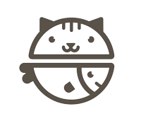
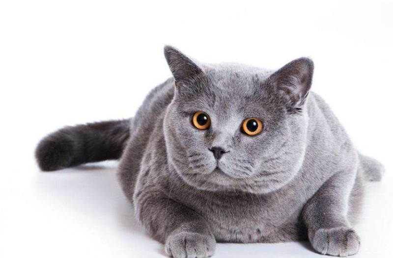

猫行动敏捷，善跳跃。吃鱼，鼠，兔等。 猫之所以喜爱吃鱼和老鼠，是因为猫是夜行动物，为了在夜间能看清事物，需要大量的牛磺酸，而老鼠和鱼的体内就含牛磺酸，所以猫不仅仅是因为喜欢吃鱼和老鼠，也是因为自己的需要才吃。猫作为鼠类的天敌，可以有效减少鼠类对青苗等作物的损害，由猫的字形“苗”可见中国古代农业生活之猫能在高墙上若无其事地散步，轻盈跳跃，不禁折服于它的平衡感。这主要得益于猫的出类拔萃的反应神经和平衡感。它只需轻微地改变尾巴的位置和高度就可取得身体的平衡， 再利用后脚强健的肌肉和结实的关节就可敏捷地跳跃，即使在高空中落下也可在空中改变身体姿势，轻盈准确地落地。善于爬高，但却不善于从顶点下落。即使从高处掉下或者跳下来的时候，猫靠尾巴调整平衡，使带软垫的四肢着地。注意不要拽断猫的尾巴，会影响它的平衡能力，也会容易使猫腹泻，减短猫的寿命。
宠物猫猫